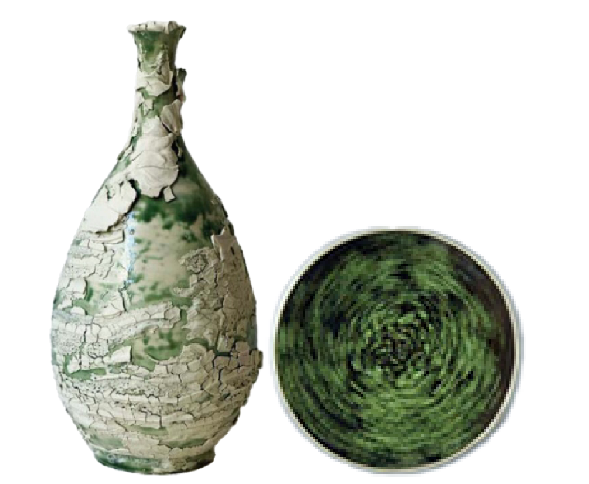
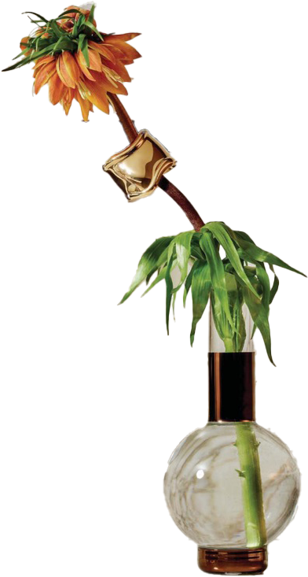
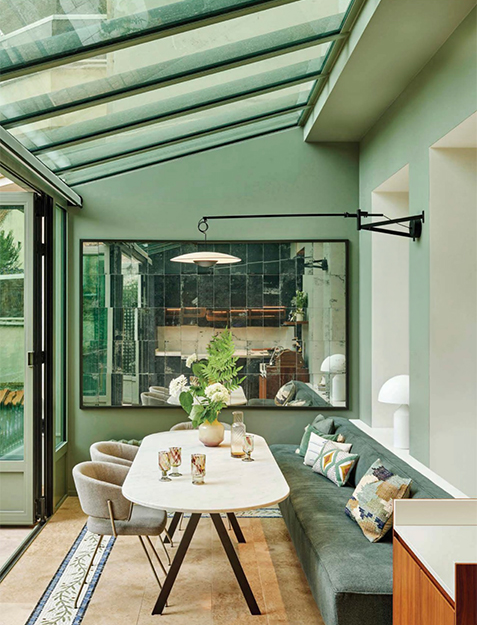

A cozy, nature-inspired kitchen
Editor 김지현
초록과 브라운이 중심이 된 이 공간은, 자연에서 받은 영감을 일상 속으로 부드럽게 끌어들인다. 짙은 우드 톤의 가구와 식물의 생기 있는 초록색이 어우러져, 단정하면서도 따뜻한 분위기를 연출하며 단순히 요리하고 식사하는 공간을 넘어, 머무는 것만으로도 편안함을 느낄 수 있는 ‘쉼의 장소’가 된다.
주방은 기능적이면서도 감성을 놓치지 않는다. 브라운 컬러의 수납장과 따뜻한 메탈 톤의 수전, 그리고 바닥의 패턴 타일까지 모두 조화를 이루며, 자연적인 색감과 재질을 통해 통일된 인상을 준다.
다이닝 공간은 다양한 그릇과 식물 장식, 조명, 그리고 유리 소품 등으로 채워져 있어 형식에 얽매이지 않고 편안하게 테이블을 둘러앉을 수 있는 분위기를 만든다. 초대받은 손님도, 오랜만에 여유를 즐기는 가족도 이 공간에서는 자연스럽게 긴장을 내려놓게 된다.
이탈리아 하이 주얼리&실버웨어 하우스 부첼라티가 디자인 듀오 데이비드 니콜라스와 협업해 알프스의 고요한 아름다움을 현대적인 알파인 샬레로 재해석하며 실버와 자연 소재가 어우러진 테이블웨어 컬렉션을 선보였다. 세르비노 Cervino 컬렉션의 사슴뿔 장식 커트러리와 루체 Rouche 실버 플레이트, 그리고 1930년대 디자인에서 영감을 받은 캐비아 와인 잔까지, 부첼라티의 장인정신이 빛나는 디테일이 테이블 위를 가득 채운다. 은은한 겨울 빛 속에서 펼쳐지는 이 테이블은 자연과 장인정신이 조화를 이루는 하나의 예술적 경험이 된다.
초록빛 도어와 식물, 그리고 풍성한 샹들리에 아래 놓인 긴 테이블은 여름의 한가운데에서 펼쳐지는 느긋한 저녁 파티를 떠올리게 한다. 스트라이프 테이블보와 유리잔, 소박한 디저트들이 어우러지며 포멀함과 자연스러움이 균형을 이루는 초록 무드의 식사 공간.여기에 캔들 라이트와 은은한 배경 음악이 더해진다면, 마치 휴양지에 온 듯한 기분 좋은 이완감을 선사한다. 테이블 위에 놓인 작은 화병 속 싱그러운 초록 식물들은 공간에 생기를 불어넣고, 손님들과 나누는 대화는 자연스럽게 흘러간다. 이처럼 디테일한 감성과 자연 소재의 조화가 어우러진 다이닝 공간은 단순한 식사가 아닌, 기억에 남는 특별한 경험을 만들어낸다.
이끼 낀 돌을 닮은 도자 병과 나뭇잎이 소용돌이치는 듯한 그린 볼. 두 소품은 자연의 색과 질감을 섬세하게 담아낸 오브제로, 공간에 깊이감과 감각적인 포인트를 더해준다. 거친 텍스처와 유기적인 곡선, 자연스럽게 번지는 녹색의 농담이 공예적인 매력을 극대화하며, 테이블 위에 놓기만 해도 마치 초록이 스며든 작은 정원을 연상케 한다. 단순한 장식을 넘어, 실내에 자연의 리듬을 불어넣는 특별한 한 조각.
 열대 식물을 연상시키는 패턴 쿠션은 공간에 활력을 더해주는 포인트 역할을 한다. 선명한 그린 컬러와 대조적인 블랙 테두리가 시선을 사로잡으며, 자연스러운 듯 강렬한 인상을 남긴다. 함께 매치된 투명한 연두빛 턴테이블은 기능적인 오브제를 넘어, 공간의 분위기를 한층 감각적으로 끌어올리는 장식 요소로 작용한다. 가벼운 음악이 흐를 것 같은 이 조합은, 실내에서도 한여름의 리듬감을 놓치지 않는 라이프스타일을 제안한다.
넓은 창과 유리천장을 통해 쏟아지는 자연광, 그리고 싱그러운 식물과 그린 컬러 벽이 어우러진 실내 공간은 마치 작은 온실처럼 느껴진다. 작은 테이블 위에 간단히 차려진 꽃과 디저트, 편안한 쿠션이 놓인 벤치까지, 누구라도 초대하고 싶은 브런치 파티 무드를 완성한다. 실내지만 자연 속에 머무는 듯한 편안함과 여유를 느낄 수 있는 공간 연출의 좋은 예.
